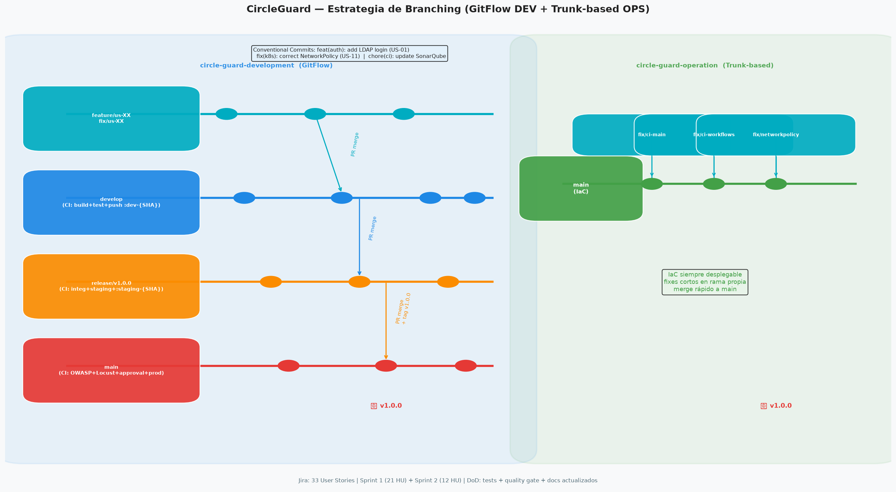
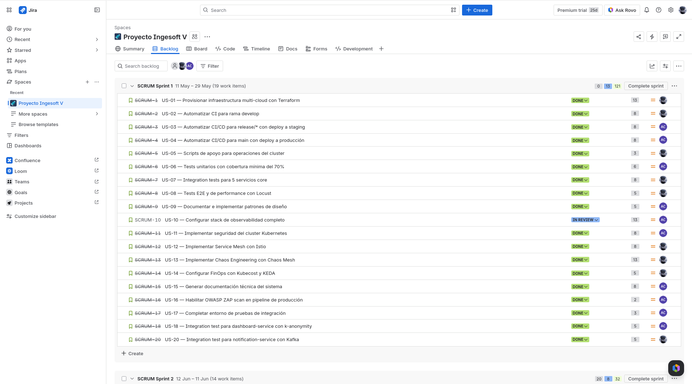
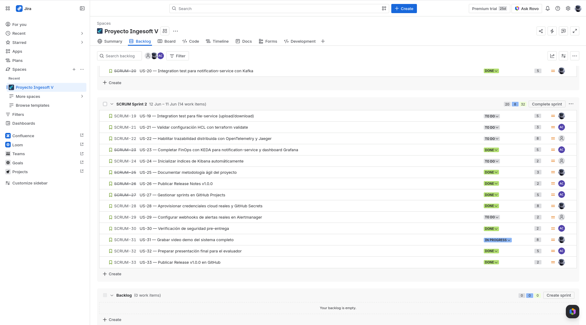
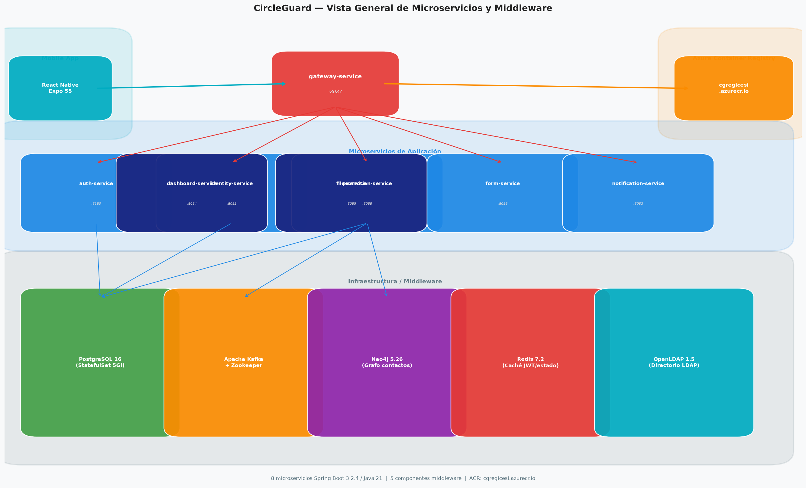
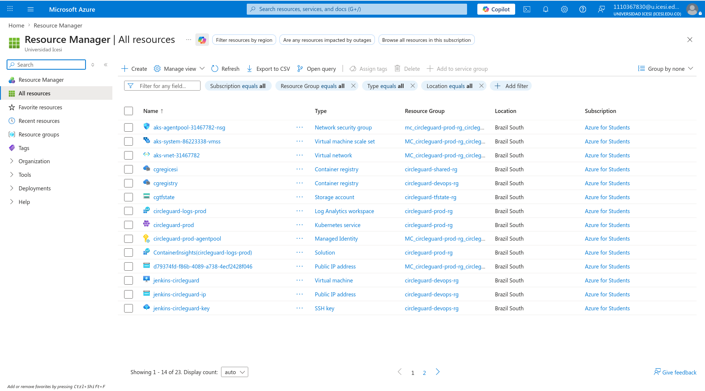
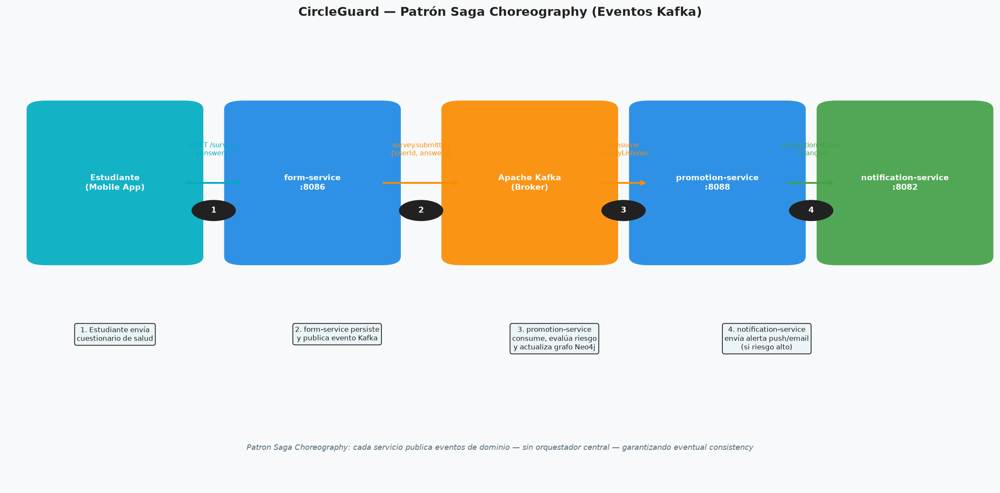
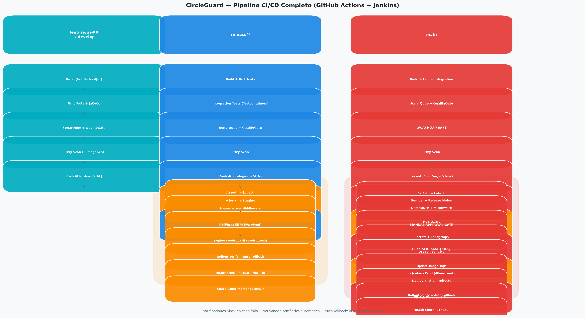
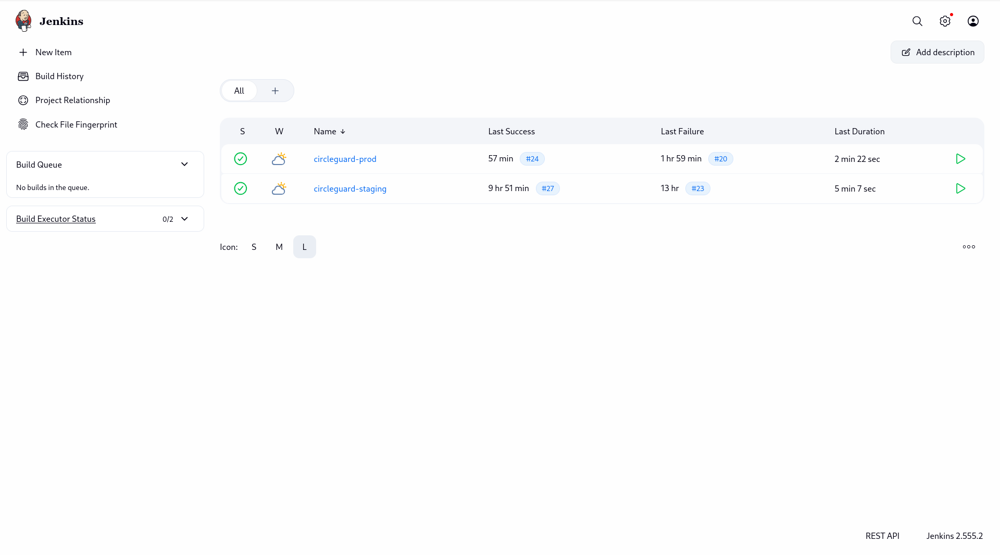
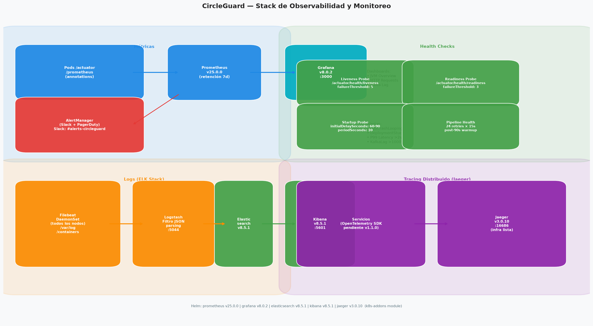
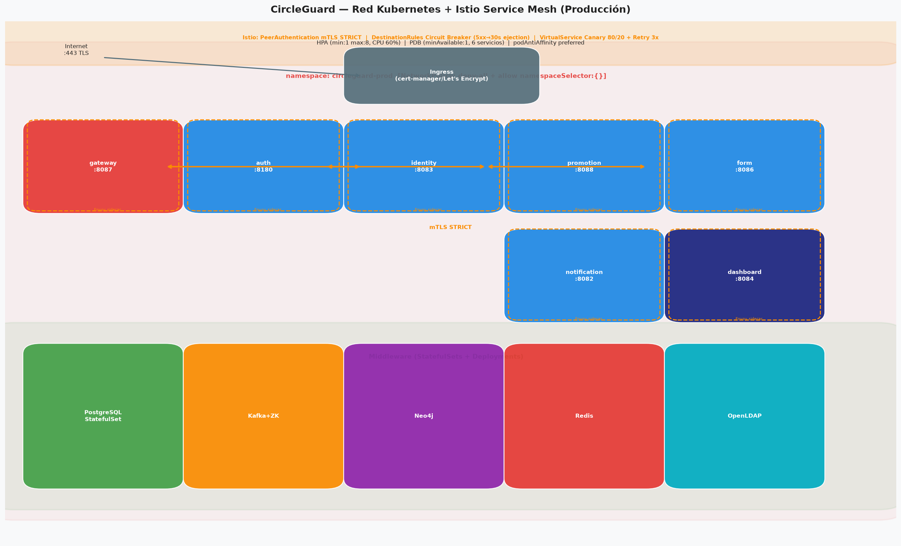

Plataforma de Microservicios
para Monitoreo de Salud en Campus
Versión 1.0.0
Slides de Sustentación — Junio 2026
circle-guard-development (DEV)
circle-guard-operation (OPS)
Usa ← → para navegar | Cada slide = una idea

| Sprint | HU | DONE | TODO |
|---|---|---|---|
| Sprint 1 | 21 | 19 | 2 |
| Sprint 2 | 12 | 3 | 9 |
| TOTAL | 33 | 22 (66%) | 11 (34%) |



Backend remoto: Azure Blob Storage (cgtfstate) — estado compartido entre dev/staging/prod
infra/modules/
├── aks/
│ ├── main.tf (azurerm_kubernetes_cluster)
│ ├── variables.tf (cluster_name, node_count, vm_size)
│ └── outputs.tf (kube_config, cluster_id)
├── acr/
│ ├── main.tf (azurerm_container_registry)
│ └── variables.tf (registry_name, sku)
└── k8s-addons/
├── main.tf (helm_release para cert-manager, Prometheus, etc)
└── variables.tf (enable_monitoring, enable_istio)resource "azurerm_kubernetes_cluster" "staging" {
name = var.cluster_name
location = var.location
resource_group_name = var.resource_group
kubernetes_version = "1.34.8"
default_node_pool {
name = "default"
node_count = var.node_count
vm_size = var.vm_size
auto_scaling_enabled = true
}
}module "aks" {
source = "../../modules/aks"
resource_group = "circleguard-dev-rg"
location = var.location
node_count = 1
cluster_name = "circleguard-dev"
environment_tag = "dev"
}
module "k8s_addons" {
source = "../../modules/k8s-addons"
enable_cert_manager = true
enable_sealed_secrets = true
enable_keda = true
}| Ambiente | Cluster | Namespace |
|---|---|---|
| DEV | circleguard-dev | circleguard-dev |
| STAGING | circleguard-stage | circleguard-stage |
| PROD | circleguard-prod | circleguard-prod |


apiVersion: networking.istio.io/v1beta1
kind: DestinationRule
metadata:
name: identity-service-cb
namespace: circleguard-prod
spec:
host: identity-service
trafficPolicy:
outlierDetection:
consecutive5xxErrors: 5
interval: 30s
baseEjectionTime: 30s
maxEjectionPercent: 50apiVersion: v1
kind: ConfigMap
metadata:
name: circleguard-infra-config
namespace: circleguard-prod
data:
POSTGRES_HOST: "circleguard-postgres.svc.cluster.local"
POSTGRES_PORT: "5432"
KAFKA_BOOTSTRAP_SERVERS: "circleguard-kafka.svc.cluster.local:9092"
REDIS_HOST: "circleguard-redis.svc.cluster.local"
NEO4J_URI: "bolt://circleguard-neo4j.svc.cluster.local:7687"
LDAP_URL: "ldap://circleguard-openldap.svc.cluster.local:389"
Detecta:
Quality Gate: Bloquea merge si coverage < 70% o hay issues críticas
security-dast:
name: OWASP ZAP Dynamic Testing
runs-on: ubuntu-latest
steps:
- uses: actions/checkout@v4
- run: docker run -t owasp/zap2docker-stable \
zap-baseline.py -t http://gateway:8087 \
-r zap-report.html || true
- name: Upload ZAP Report
uses: actions/upload-artifact@v4
with:
name: zap-report
path: zap-report.html
pipeline {
agent any
stages {
stage('Manual Approval for Production') {
steps {
input 'Aprobar despliegue a PRODUCCIÓN?'
}
}
stage('Deploy to GKE Prod') {
steps {
sh 'gcloud auth activate-service-account --key-file=$GCP_KEY'
sh 'gcloud container clusters get-credentials circleguard-prod'
sh 'kubectl apply -f k8s/services/prod -n circleguard-prod'
}
}
}
}@Test
void testGenerateToken_ReturnsValidJwt() {
String token = jwtService.generateToken("user123");
assertNotNull(token);
assertTrue(jwtService.validateToken(token));
assertEquals("user123",
jwtService.getUserFromToken(token));
}
@Test
void testTokenExpiration() {
String expired = jwtService.generateExpiredToken();
assertFalse(jwtService.validateToken(expired));
}@Test
fun `mock identity client returns random UUID`() {
val mockId = UUID.randomUUID()
assertNotNull(mockId)
assertEquals(UUID::class.java, mockId::class.java)
}
@Test
fun `UUID generation produces valid UUIDs`() {
repeat(10) {
val uuid = UUID.randomUUID()
assertEquals(36, uuid.toString().length)
}
}AUTH_URL = os.environ.get("AUTH_URL", "http://localhost:8180")
GATEWAY_URL = os.environ.get("GATEWAY_URL", "http://localhost:8087")
MAX_RETRIES = 3
class BaseUser(HttpUser):
def _do_login(self, username, password):
resp = self.client.post(
f"{AUTH_URL}/api/v1/auth/login",
json={"username": username, "password": password}
)
return resp.json()["token"] if resp.status_code == 200 else NoneREGLA: Conventional Commits → SemVer automático
feat: → versión MENOR (v1.0.0 → v1.1.0)
fix: → versión PARCHE (v1.0.0 → v1.0.1)
BREAKING CHANGE: → versión MAYOR (v1.0.0 → v2.0.0)
EJEMPLOS:
feat(auth): add LDAP password reset (US-01)
fix(kubernetes): add RBAC roles (US-11)
chore(ci): upgrade SonarQube versionVersión: 1.0.0 (primera versión estable)
Fecha: 2026-06-12
Repositorios:
- circle-guard-development: 8 microservicios
- circle-guard-operation: infraestructura + CI/CD
Tag: v1.0.0 (aplicado simultáneamente en ambos repos)
Estado: Listo para v1.0.0 (requiere git tag v1.0.0 en main)
apiVersion: monitoring.coreos.com/v1
kind: PrometheusRule
metadata:
name: circleguard-alerts
spec:
groups:
- name: circleguard.availability
rules:
- alert: PodCrashLooping
expr: rate(kube_pod_container_status_restarts_total[5m]) > 2
for: 2m
annotations:
summary: "Pod {{ $labels.pod }} CrashLoopBackOff"apiVersion: v1
kind: ConfigMap
metadata:
name: grafana-dashboards-circleguard
namespace: monitoring
data:
jvm-overview.json: |
{
"panels": [
{
"datasource": "Prometheus",
"targets": [
{ "expr": "jvm_memory_used_bytes" },
{ "expr": "jvm_threads_current" },
{ "expr": "http_server_requests_seconds_bucket" }
]
}
]
}livenessProbe:
httpGet:
path: /actuator/health/liveness
port: 8087
initialDelaySeconds: 90
periodSeconds: 15
readinessProbe:
httpGet:
path: /actuator/health/readiness
port: 8087
periodSeconds: 10
timeoutSeconds: 5# SEALED SECRET — Dev Environment
# Seguro versionar en git. kubeseal lo descifra en runtime.
#
# Regenerar con:
# kubectl create secret generic circleguard-secret \
# --from-literal=POSTGRES_PASSWORD=... \
# --from-literal=JWT_SECRET=... | \
# kubeseal --controller-name=sealed-secrets -o yamlapiVersion: rbac.authorization.k8s.io/v1
kind: Role
metadata:
name: developer-role
namespace: circleguard-dev
rules:
- apiGroups: [""]
resources: ["pods", "services", "configmaps"]
verbs: ["get", "list", "watch"]
- apiGroups: ["apps"]
resources: ["deployments"]
verbs: ["get", "list", "watch"]apiVersion: cert-manager.io/v1
kind: ClusterIssuer
metadata:
name: letsencrypt-prod
spec:
acme:
server: https://acme-v02.api.letsencrypt.org/directory
email: devops@circleguard.edu
privateKeySecretRef:
name: letsencrypt-prod-account-key
solvers:
- http01:
ingress:
ingressClassName: nginxapiVersion: networking.k8s.io/v1
kind: NetworkPolicy
metadata:
name: allow-internal-traffic
spec:
podSelector: {}
ingress:
- from:
- namespaceSelector:
matchLabels:
environment: development
egress:
- to:
- namespaceSelector:
matchLabels:
environment: development
apiVersion: security.istio.io/v1beta1
kind: PeerAuthentication
metadata:
name: default
namespace: circleguard-prod
spec:
mtls:
mode: STRICTapiVersion: networking.istio.io/v1beta1
kind: DestinationRule
metadata:
name: identity-service-cb
namespace: circleguard-prod
spec:
host: identity-service
trafficPolicy:
outlierDetection:
consecutive5xxErrors: 5
interval: 30s
baseEjectionTime: 30s
maxEjectionPercent: 50apiVersion: networking.istio.io/v1beta1
kind: VirtualService
metadata:
name: promotion-service
spec:
http:
- route:
- destination:
host: promotion-service
subset: v1
weight: 80
- destination:
host: promotion-service
subset: v2
weight: 20
retries:
attempts: 3# PodChaos: kill aleatorio cada 2 minutos
# Valida: auto-healing, readiness probes, HPA
apiVersion: chaos-mesh.org/v1alpha1
kind: PodChaos
metadata:
name: promotion-pod-kill
namespace: chaos-testing
spec:
action: pod-kill
mode: one
selector:
namespaces: ["circleguard-stage"]
labelSelectors:
app: promotion-service
scheduler:
cron: "@every 2m"apiVersion: keda.sh/v1alpha1
kind: ScaledObject
metadata:
name: promotion-service-scaler
namespace: circleguard-dev
spec:
minReplicaCount: 0
maxReplicaCount: 3
triggers:
- type: kafka
metadata:
bootstrapServers: circleguard-kafka.svc.cluster.local:9092
topic: health-status-events
lagThreshold: "5"| Sección | % | Estado |
|---|---|---|
| 1. Metodología Ágil | 10% | ✅ |
| 2. IaC Terraform | 20% | ✅ |
| 3. Patrones de Diseño | 10% | ✅ |
| 4. CI/CD | 15% | ✅ |
| 5. Pruebas | 15% | ✅ |
| 6. Change Mgmt + Release | 5% | ✅ |
| 7. Observabilidad | 10% | 🟡 |
| 8. Seguridad | 5% | ✅ |
| 9. Documentación | 10% | 🟡 |
| Subtotal | 90% | |
| BONUS (4) | +20% | ✅ |